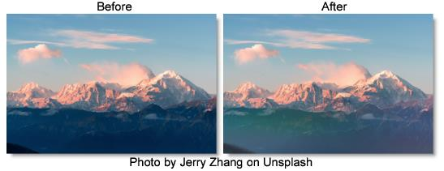

S_CloudsColorSmooth
Description
Generates a full color clouds texture. The procedural noise texture is independently generated for each of the red, green, and blue output channels.
The S_CloudsColorSmooth filter comes from the Emmy award winning Boris FX Sapphire filter set.
Category
Render.
Controls
Presets
To select a preset, pick one from the Presets window.
Time
The effect is advanced in time.
Frequency
The spatial frequency of the clouds. Increase to zoom out, decrease to zoom in. Very high values of Frequency are clamped internally so the grain size is no smaller than a few pixels.
Frequency Rel X
The relative horizontal frequency of the texture. Increase to stretch it vertically or decrease to stretch it horizontally.
Octaves
The number of summed layers of noise. Each octave is twice the frequency and half the amplitude of the previous. A single octave creates a smooth texture. Adding octaves makes the result approach a fractal (1/f) noise texture.
Seed
Used to initialize the random number generator. The actual seed value is not significant, but different seeds produce different results and the same value should give a repeatable result.
Shift Start X & Y
Translation offset of the texture. Since the texture is procedurally generated, it can be shifted with no repeating units or seams occurring.
Brightness
Scales the brightness of the result.
Scale Colors
Scales the color of the result. For example, if it is yellow [1 1 0], the blue of the result will be 0.
Saturation
Scales the color saturation. Increase for more intense colors. Set to 0 for monochrome.
Offset
Adds this gray value to the result or subtracts if negative. 0 has no effect, .5 is middle gray, and 1 is white.
Bg Brightness
The image brightness is scaled by this value before being combined with the clouds.
Combine
Determines how the texture is combined with the Background.
Clouds Only
Renders only the clouds texture with no Background.
Mult
The texture is multiplied by the Background.
Add
The texture is added to the Background.
Screen
The texture is blended with the Background using a screen operation.
Difference
The result is the difference between the texture and Background.
Overlay
The texture is combined with the Background using an overlay function.
Show Shift Start
Enables/disables the on-screen control for adjusting the Shift Start parameter.